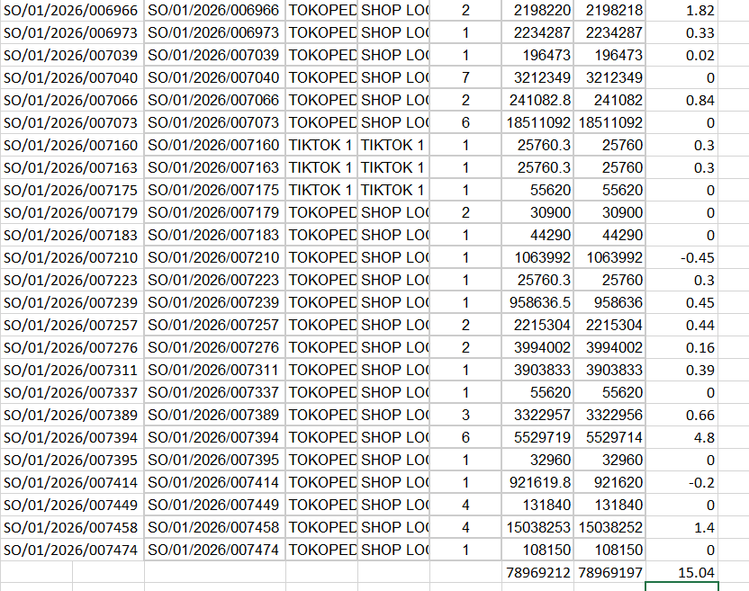
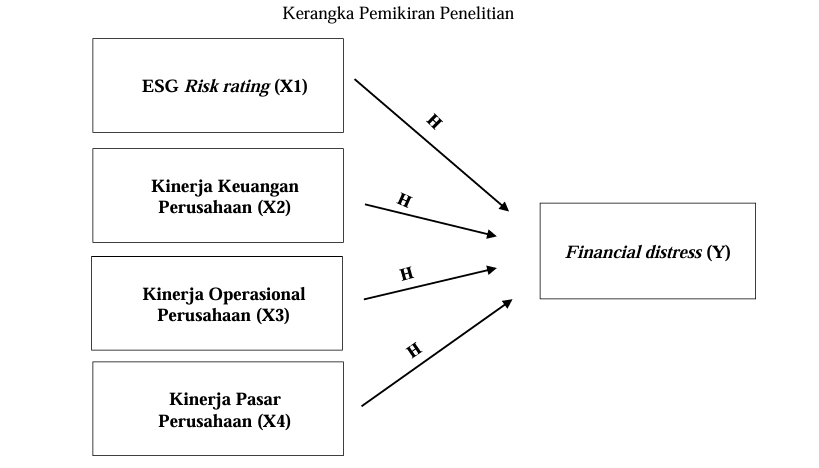
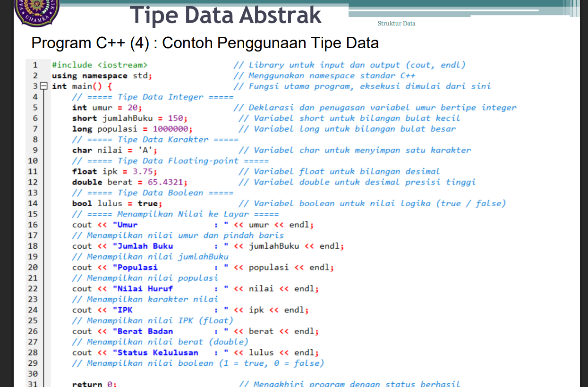
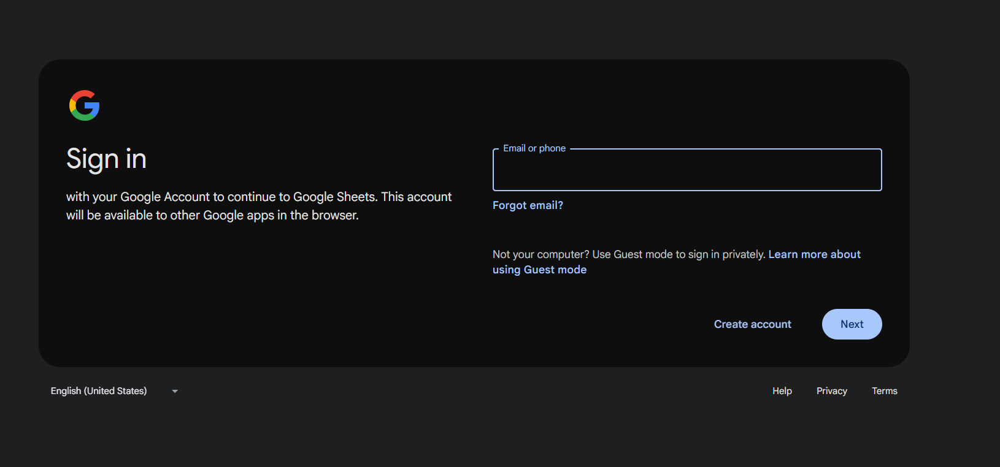

Majalah Online Akademik Teknologi dan Inovasi Digital
Selamat datang di TechEdu Magazine Edisi 2. Majalah ini membahas perkembangan teknologi digital, Artificial Intelligence, dan inovasi yang mendukung dunia pendidikan serta industri modern.
Perkembangan teknologi informasi semakin pesat dan mempengaruhi berbagai aspek kehidupan. Melalui majalah ini, kami menyajikan berbagai informasi, opini, dan artikel teknologi yang bermanfaat bagi mahasiswa dan masyarakat umum.
Bagi para pegiat IT dan mahasiswa informatika, era AI bukanlah ancaman, melainkan ajakan untuk naik kelas. Kuncinya adalah memperkuat pemahaman fundamental, mengasah logika, dan meningkatkan kemampuan komunikasi. Sehebat apa pun sebuah alat, ia tetap butuh seorang maestro di belakangnya. Di tangan programmer yang tepat, AI bukan lagi sebuah ancaman, melainkan kekuatan baru yang melipatgandakan produktivitas.
Di era digital yang bergerak super cepat, mahasiswa IT memegang peran krusial bukan sekadar sebagai pengguna teknologi, melainkan sebagai arsitek dan problem solver masa depan. Mereka adalah jembatan transformasi yang bertugas menciptakan solusi digital atas berbagai masalah nyata di masyarakat, sekaligus menjadi benteng pertahanan dalam menjaga keamanan siber (cybersecurity) di tengah derasnya arus data. Di era kecerdasan buatan (AI) saat ini, mahasiswa IT juga dituntut untuk tidak hanya menguasai teknik pemrograman dasar, tetapi harus adaptif menjadi pembelajar seumur hidup yang mampu mengintegrasikan AI demi melipatgandakan produktivitas. Pada akhirnya, peran besar ini akan optimal jika mereka mampu menyeimbangkan hard skills yang kuat—seperti pemahaman fundamental sistem dan logika algoritma—dengan soft skills seperti empati dan komunikasi, karena teknologi terbaik selalu lahir dari pemahaman mendalam tentang kebutuhan manusia.
Implementasi Chatbot AI untuk layanan akademik hadir sebagai solusi digital yang mentransformasi administrasi kampus menjadi lebih responsif dan efisien selama 24/7 melalui platform seperti WhatsApp atau web. Dengan memanfaatkan teknologi Natural Language Processing (NLP) dan integrasi API yang aman ke Sistem Informasi Akademik (SIAKAD), chatbot ini mampu memahami konteks pertanyaan mahasiswa secara instan—mulai dari informasi kalender akademik hingga pengecekan nilai IPK dan status KRS secara personal. Otomasi ini tidak hanya memangkas waktu antrean bagi mahasiswa, tetapi juga meringankan beban kerja staf administrasi dari tugas-tugas repetitif dengan tetap menjaga keamanan data sensitif melalui protokol autentikasi yang ketat.
Pemanfaatan n8n untuk workflow automation merupakan solusi efisien bagi developer untuk mengintegrasikan berbagai aplikasi dan mengotomatiskan tugas-tugas repetitif lewat antarmuka visual berbasis low-code. Keunggulan utamanya terletak pada sifatnya yang self-hosted—biasanya dijalankan via Docker—sehingga instansi memiliki kontrol penuh atas keamanan data tanpa biaya lisensi yang mengikat seperti platform komersial lainnya. Dengan kemampuan mengeksekusi logika kompleks lewat node JavaScript/Python serta dukungan integrasi agen AI, n8n mampu menghubungkan berbagai sistem secara dinamis, mulai dari otomatisasi penginputan data akademik dari formulir digital ke basis data, hingga pengiriman notifikasi otomatis ke Telegram saat mendeteksi adanya gangguan pada server.
Mahasiswa Program Studi Teknik Informatika aktif mengembangkan berbagai proyek digital seperti chatbot, website akademik, dashboard monitoring, dan sistem berbasis AI.
NIM : 2503015012
Program Studi : Teknik Informatika
NIM : 2503015033
Program Studi : Teknik Informatika
NIM :
Program Studi : Teknik Informatika
NIM : 2503015095
Program Studi : Teknik Informatika
NIM : 2503015095
Program Studi : Teknik Informatika
Dokumentasi kegiatan kelompok selama pengerjaan proyek.



